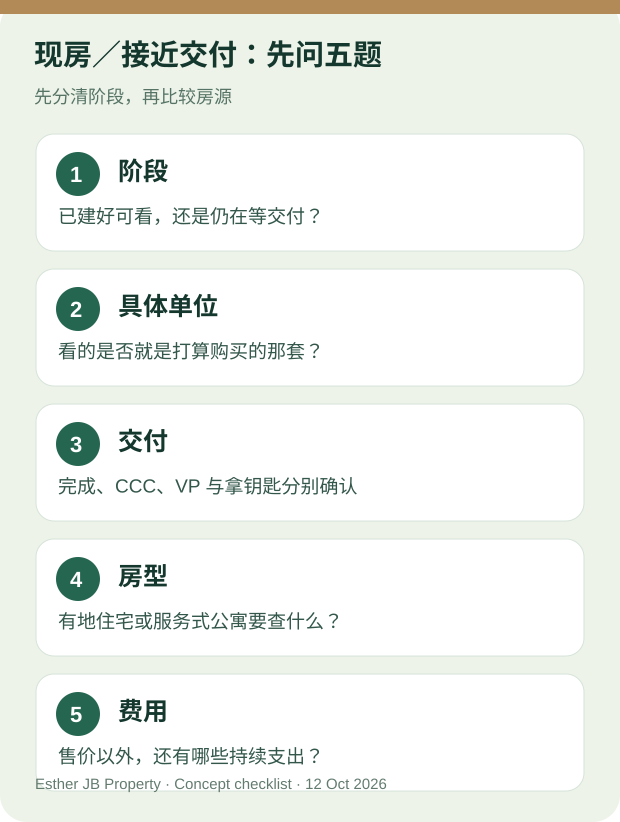

新山买家问答 · 资料核对: 2026 年 10 月 12 日
新山现房与接近交付的新盘，先问这五题
**先确认房源属于哪一个阶段。**已建成、可安排看具体单位的现房，与发展商说“接近交付”、仍待核对进度的新盘，不应混为一谈。两者都不能只凭广告推定拿钥匙或入住日期。Austin、CIQ 是找房地区，不代表当地每个项目已有现房或即将交付。KPKT 已建成住宅与交付说明

原创看房示意图；不是任何房屋的实况或合格证明。
1. 这是现房，还是仍待交付的新盘？
请卖方或发展商说明目前阶段，并提供相应文件。已建成房源可继续问能否进入具体单位；接近交付的新盘要看最新书面进度与合同约定，不把预计日期写成保证。国家房屋局建议买家核对项目资料与预计完成日期。国家房屋局买家提示
2. 可以看我准备购买的那一套吗？
如果可以，请确认单位编号，现场看采光、视野、噪音、停车和公共区域。若目前只能看示范单位、样板间、户型图或其他楼层，就记录看不到哪些实际情况，不要当成你买的单位已经看过。
3. “接近交付”“已建成”与“可拿钥匙”一样吗？
**不一样。**对发展商新盘，询问 CCC、空置交付（VP）、钥匙安排与实际书面进度；对二手房，则请律师核对买卖合同、现有占用及交付条件。KPKT 资料区分 CCC 与 VP，所以不能把“快拿钥匙”当成已经交付。KPKT 说明
4. 有地住宅和服务式公寓，分别看什么？

人物及室内场景仅供想象居住方式，不代表任何在售房源。
有地住宅看屋顶、墙面、渗水迹象、排水、停车和日常路线，并让律师核查产权与转让条件。JKPTG 土地业主指南
服务式公寓看具体单位、停车、电梯与已开放设施；询问产权／用途、管理费、维修基金与使用条件。若尚未交付，实际运行情况仍待核实。KPKT 分层管理手册
5. 预算要算哪些费用？
除了售价，核对首期、银行实际条件、可能的装修或维修、停车及持续费用。服务式公寓的管理费与维修基金金额按具体项目核实；有地住宅则要准备后续维护预算。现房或接近交付，都不能保证贷款批准、租金或升值。
如果你想找 Austin／CIQ 的现房或接近交付的新盘，告诉 Esther 预算、房型与预计入住时间；我会先按当时可核实的房源整理选择，再分别确认能否看具体单位和交付阶段。
请 Esther 帮我筛选 JB 房源
联系 Esther
延伸阅读：新山现房与接近交付新盘完整指南 · 认识 Esther
来源与更新
资料核对：2026 年 10 月 12 日。本文是看房问题清单，不代替合同、产权、建筑或融资的个案审查。